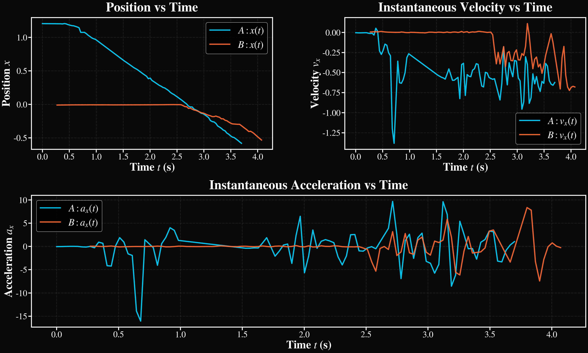
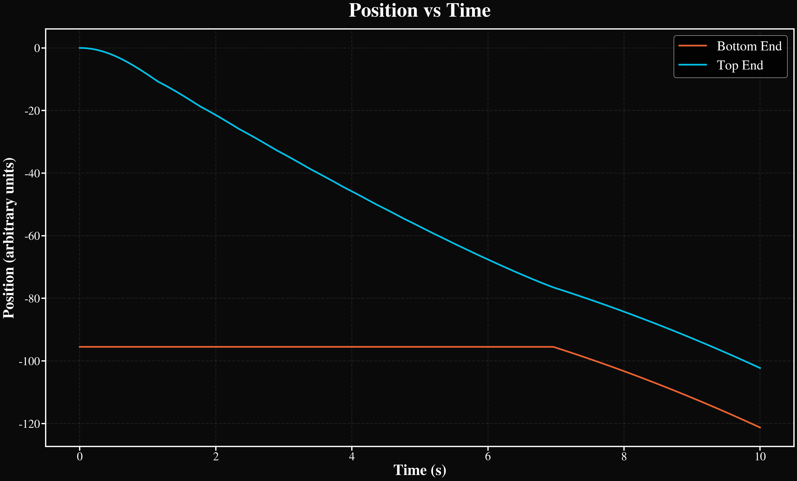
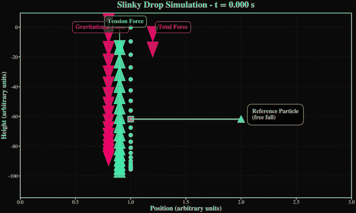

Data & Figures
- Mass measurements (two setups) (mass_a.txt, mass_b.txt)
- Tracking and processing pipeline
- Plots of tracks, fits, and space-time diagram
Summary of datasets and fits

Top and bottom positions vs time (sample run)

Mass-spring chain simulation
